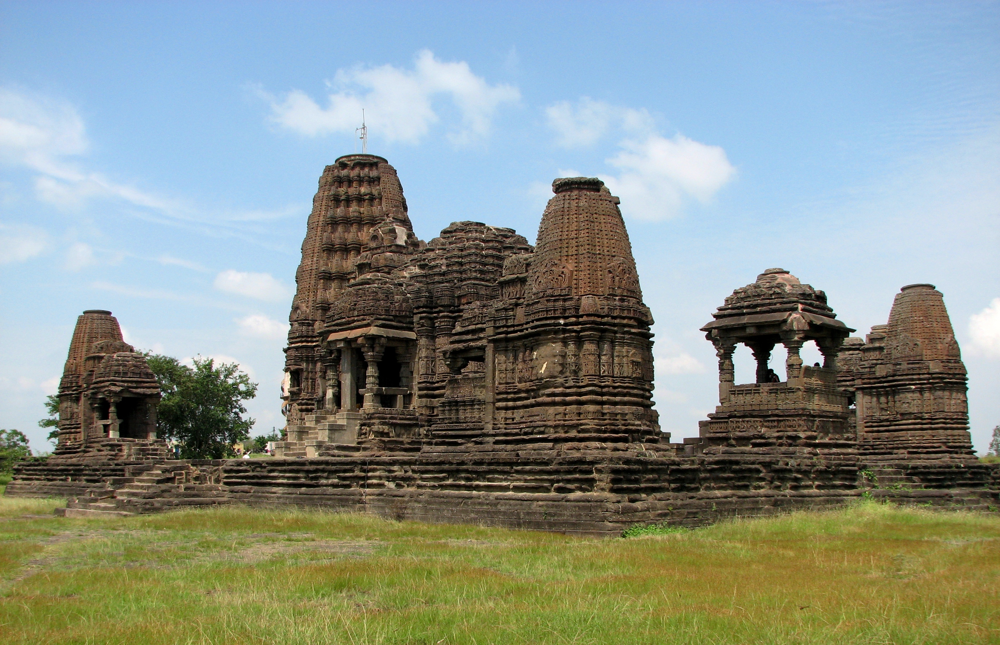
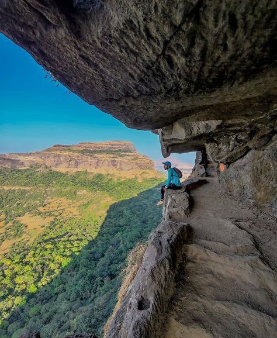

Gondeshwar Temple

Location: Sinnar, Maharashtra, India
Year Built: 11th century
Dedicated to: Lord Shiva
Dynasty: Yadava dynasty
History
Gondeshwar Temple, located in Sinnar, Maharashtra, is a remarkable testament to the region's rich cultural
and architectural heritage.
Constructed in the 11th century during the reign of the Yadava dynasty, the
temple is dedicated to Lord Shiva and exemplifies the
artistry and craftsmanship of that era.
The Yadavas were known for their patronage of art and architecture, and Gondeshwar Temple is a prime example
of their contributions.
The temple features intricate carvings and sculptures that depict various
deities, celestial beings, and motifs from Hindu mythology,
showcasing the skilled craftsmanship of the
artisans of that time.
The temple's structure is built using local stone, and its design reflects the typical style of the period,
characterized by a square sanctum
(garbhagriha) and an elaborate entrance (mandapa) adorned with
detailed carvings. One of the notable features of the temple is the
exquisite depiction of the female
figures, known as "apsaras," which highlight the aesthetic sensibilities of the Yadava era.
Over the centuries, the Gondeshwar Temple has not only served as a place of worship but also as a cultural
hub for the community.
Despite facing the ravages of time, it remains a significant pilgrimage site and
a focal point for historical studies. The temple's
enduring legacy continues to attract visitors,
scholars, and devotees, making it an essential part of Maharashtra's historical landscape.
Today,
efforts are ongoing to preserve its rich heritage, ensuring that future generations can appreciate its
beauty and significance.
Location
Gangapur Dam
 Location: Nashik, Maharashtra
Year Built: 1954
Length: 3,902 meters
Height: 36.57 meters
River: Godavari River
Type: Earthfill dam
Location: Nashik, Maharashtra
Year Built: 1954
Length: 3,902 meters
Height: 36.57 meters
River: Godavari River
Type: Earthfill dam
History
The Gangapur Dam, located near Nashik, was constructed in 1954 on the Godavari River. It is an earthfill dam, designed primarily
for water management in the region. The dam's construction was part of post-independence efforts to enhance irrigation and provide
reliable water resources for both agricultural and domestic use in Maharashtra.
The dam has played a crucial role in the development of the region by providing irrigation for vast agricultural lands surrounding Nashik.
This has contributed to the city's growth as a major agricultural hub, particularly for crops like grapes, onions, and other vegetables.
It ensures a steady water supply even during dry seasons, benefiting local farmers.
Apart from irrigation, Gangapur Dam is a major source of drinking water for Nashik city and nearby areas. Its reservoir also supports a small
hydroelectric power generation plant, contributing to the local power supply, though on a modest scale.
Over the years, Gangapur Dam has become a significant landmark in the region, not only for its practical purposes but also as a tourist spot.
The dam's scenic surroundings and the nearby Gangapur Backwaters attract visitors looking for relaxation and natural beauty.
Location
Swaminarayan Temple
Location: Nashik-Pune Highway, Dindori, Nashik
Year Built: 2017
Dedicated to: Swaminarayan
Architecture: Stone carvings, traditional Indian design
History
The Swaminarayan Temple in Nashik, inaugurated in 2017, is located in Dindori on the Nashik-Pune Highway,
about 25
kilometers from the city. Built by the BAPS Swaminarayan Sanstha, it serves as a spiritual and
community center for
followers of Bhagwan Swaminarayan, a revered 19th-century spiritual leader.
The temple’s architecture follows traditional Indian design, with intricate stone carvings depicting Hindu
scriptures and
Swaminarayan's teachings. It provides a peaceful space for prayer and spiritual
reflection.
Beyond worship, the temple hosts community service activities, including satsangs (spiritual discourses),
medical camps,
and educational programs for the underprivileged. These initiatives reflect the temple’s
commitment to service, devotion,
and moral values.
The Nashik Swaminarayan Temple attracts visitors for its spiritual atmosphere and architectural beauty,
playing a key
role in promoting Swaminarayan’s teachings and uplifting the community.
Location
Harihar Fort


Location: Near Igatpuri, Nashik, Maharashtra
Trek Difficulty: Moderate to challenging
Historical Era: Yadava Dynasty
Height: 3,676 feet (1,120 meters)
Popular Activity:Trekking and adventure tourism
History
Harihar Fort, near Nashik, dates back to the Yadava Dynasty, built to guard the trade routes connecting Maharashtra’s ports to the mainland.
Its strategic location on the Trimbak Range made it an important defense fort in medieval times.
The fort's unique feature is its steep, rock-cut steps, almost vertical in some places, making it one of the most challenging climbs in the region.
These steps, carved directly into the rock, reflect the architectural ingenuity of the time and provided strong defense against invaders.
Over the centuries, Harihar Fort changed hands between various rulers, including the Bahmani Sultanate, Marathas, and British. Its elevated
position allowed for effective surveillance of the surrounding regions, contributing to its military significance.
Today, the fort stands as a popular trekking destination, attracting adventurers and history enthusiasts alike. Its panoramic views and challenging
ascent make it a favorite among trekkers, while its ruins offer a glimpse into its storied past.
Location
Trimbakeshwar Temple

 Location: Trimbak, Nashik, Maharashtra
Dedicated to: Lord Shiva
Jyotirlinga: One of the 12 Jyotirlingas in India
Famous for: Kumbh Mela and spiritual importance
Architectural Style:Hemadpanthi architecture
Location: Trimbak, Nashik, Maharashtra
Dedicated to: Lord Shiva
Jyotirlinga: One of the 12 Jyotirlingas in India
Famous for: Kumbh Mela and spiritual importance
Architectural Style:Hemadpanthi architecture
History
The Trimbakeshwar Temple, located in Nashik, is one of the most sacred temples in India, dedicated to Lord Shiva. It is one of the 12 Jyotirlingas,
believed to be self-manifested symbols of Shiva’s divine presence. The temple's origin is deeply rooted in ancient Hindu scriptures,
and it has been a place of pilgrimage for centuries.
The current structure of the temple was built in the 18th century by Peshwa Balaji Baji Rao (Nana Saheb). It features traditional Hemadpanthi
architecture, with intricate stone carvings and a black stone Shiva Lingam, which sets it apart from other Jyotirlingas.
The temple is closely associated with the Godavari River, which is said to originate from the Brahmagiri Hills near Trimbakeshwar. As a result,
it holds significance in various Hindu rituals, including the performance of shraddha (ancestral rites).
Over the centuries, the temple has attracted millions of pilgrims seeking spiritual blessings and moksha (liberation). Today, it remains an important
religious site, visited by devotees from all over India, and is particularly famous during the Kumbh Mela, one of the largest religious gatherings in
the world.
Location